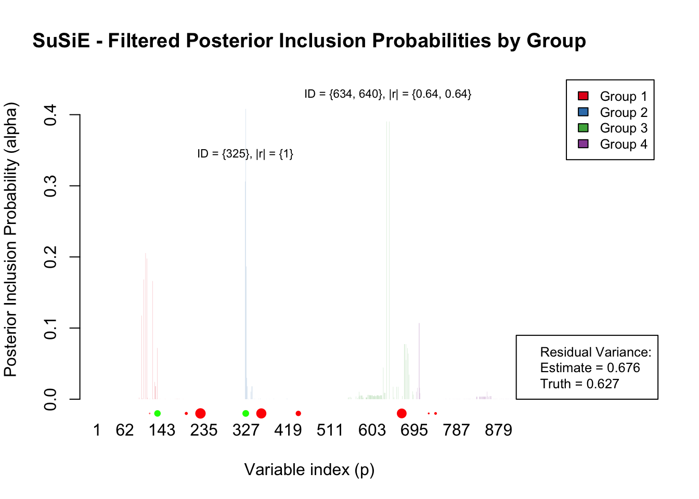
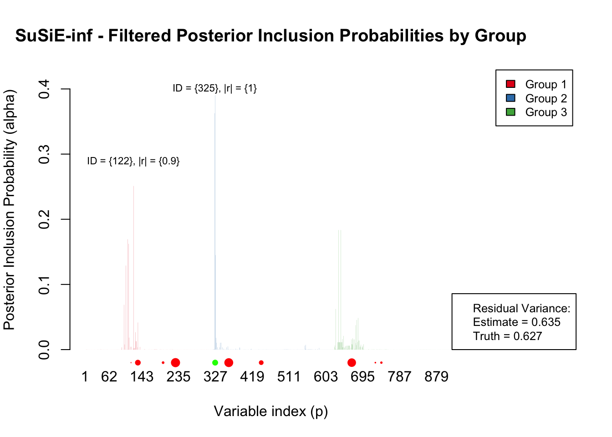
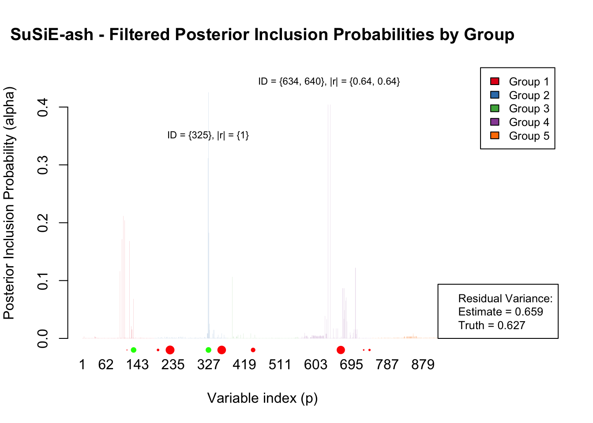
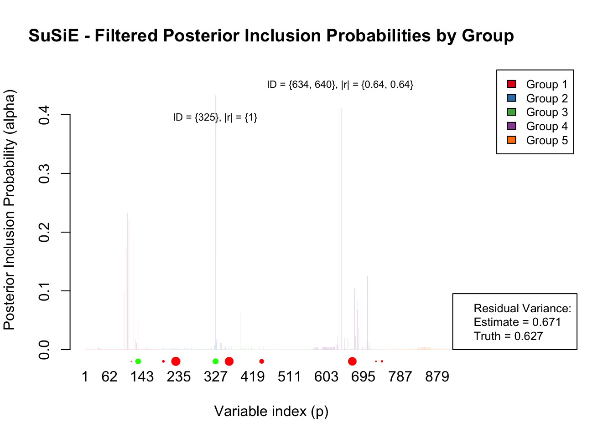
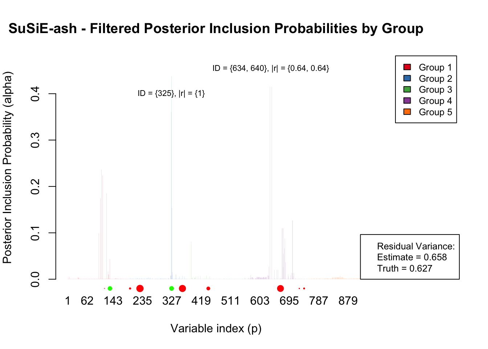
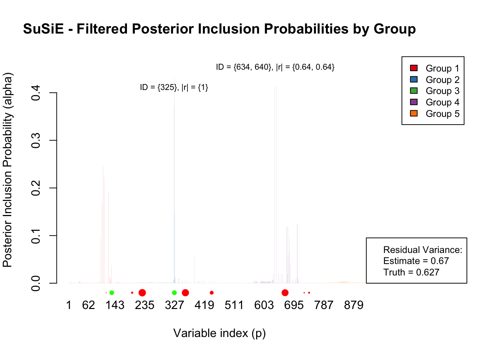
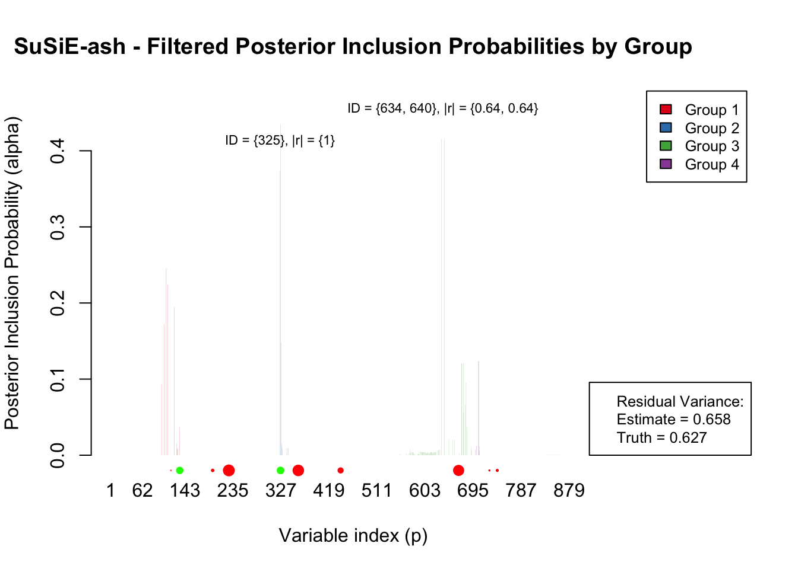

Iteration Analysis of Sparse Setting with Low LD among causal variants |r| < 0.25
Last updated: 2025-03-03
Checks: 6 1
Knit directory: SuSiE-ASH/
This reproducible R Markdown analysis was created with workflowr (version 1.7.1). The Checks tab describes the reproducibility checks that were applied when the results were created. The Past versions tab lists the development history.
Great! Since the R Markdown file has been committed to the Git repository, you know the exact version of the code that produced these results.
Great job! The global environment was empty. Objects defined in the global environment can affect the analysis in your R Markdown file in unknown ways. For reproduciblity it’s best to always run the code in an empty environment.
The command set.seed(20240328) was run prior to running
the code in the R Markdown file. Setting a seed ensures that any results
that rely on randomness, e.g. subsampling or permutations, are
reproducible.
Great job! Recording the operating system, R version, and package versions is critical for reproducibility.
Nice! There were no cached chunks for this analysis, so you can be confident that you successfully produced the results during this run.
Using absolute paths to the files within your workflowr project makes it difficult for you and others to run your code on a different machine. Change the absolute path(s) below to the suggested relative path(s) to make your code more reproducible.
| absolute | relative |
|---|---|
| /Users/alexmccreight/Columbia/Research/SuSiE-ASH/SuSiE-ASH/code/susie_versions/SuSiE_Ash_Marginal.R | code/susie_versions/SuSiE_Ash_Marginal.R |
| /Users/alexmccreight/Columbia/Research/SuSiE-ASH/SuSiE-ASH/new-rcpp/mr.ash.alpha | new-rcpp/mr.ash.alpha |
| /Users/alexmccreight/Columbia/Research/SuSiE-ASH/SuSiE-ASH/submodules/susieR | submodules/susieR |
| /Users/alexmccreight/Columbia/Research/SuSiE-ASH/SuSiE-ASH/code/susie_versions/susie_inf.R | code/susie_versions/susie_inf.R |
| /Users/alexmccreight/Columbia/Research/SuSiE-ASH/SuSiE-ASH/X_subset | X_subset |
Great! You are using Git for version control. Tracking code development and connecting the code version to the results is critical for reproducibility.
The results in this page were generated with repository version 1c6083e. See the Past versions tab to see a history of the changes made to the R Markdown and HTML files.
Note that you need to be careful to ensure that all relevant files for
the analysis have been committed to Git prior to generating the results
(you can use wflow_publish or
wflow_git_commit). workflowr only checks the R Markdown
file, but you know if there are other scripts or data files that it
depends on. Below is the status of the Git repository when the results
were generated:
Ignored files:
Ignored: .DS_Store
Ignored: .Rapp.history
Ignored: .Rhistory
Ignored: .Rproj.user/
Ignored: analysis/.DS_Store
Ignored: code/.DS_Store
Ignored: code/susie_versions/.DS_Store
Ignored: data/.DS_Store
Ignored: manuscript_scripts/
Ignored: new-rcpp/.DS_Store
Ignored: new-rcpp/matrix.multiplication/.DS_Store
Ignored: new-rcpp/matrix.multiplication/.Rapp.history
Ignored: new-rcpp/mr.ash.alpha/.DS_Store
Ignored: new-rcpp/mr.ash.alpha/.Rbuildignore
Ignored: new-rcpp/mr.ash.alpha/R/.DS_Store
Ignored: new-rcpp/mr.ash.alpha/src/.DS_Store
Ignored: new-rcpp/mr.ash.alpha/src/RcppExports.o
Ignored: new-rcpp/mr.ash.alpha/src/caisa_rcpp.o
Ignored: new-rcpp/mr.ash.alpha/src/mr.ash.alpha.so
Ignored: scripts/.DS_Store
Ignored: scripts/Old Scripts/.DS_Store
Ignored: scripts/benchmark/.DS_Store
Ignored: simulation/.DS_Store
Ignored: simulation/misc/.DS_Store
Ignored: submodules/.DS_Store
Untracked files:
Untracked: X_subset
Untracked: code/Tmp.Rmd
Untracked: misc/
Untracked: oligogenic_data_generation.R
Untracked: overleaf_graphics/
Untracked: preprint/KISS-paper.Rmd
Untracked: scripts/LD_blocks/
Untracked: scripts/benchmark/command_generation/
Untracked: scripts/benchmark/plots/
Untracked: scripts/benchmark/sparse_metrics/
Untracked: scripts/benchmark/sparse_result_files/
Untracked: scripts/benchmark/sparse_result_files_2/
Untracked: scripts/commands_to_submit_eqtl_simple.R
Untracked: scripts/eqtl_simulation_marginal.R
Untracked: scripts/eqtl_simulation_simple.R
Untracked: scripts/eqtl_simulation_v2.R
Untracked: scripts/fineboost/
Untracked: scripts/sparse_blip.R
Untracked: scripts/sparse_eqtl_simulation_marginal.R
Untracked: scripts/sparse_eqtl_simulation_simple.R
Untracked: scripts/susie_ash_mod/
Untracked: seed9_data.rds
Untracked: seed9_ld.rds
Untracked: seed9_res.rds
Untracked: simulation/15x3jxl3enlnnsejfeke1_tmate.log
Untracked: simulation/15x3jxl3enlnnsejfeke1_tmate_session.log
Untracked: simulation/eqtl-results/
Untracked: simulation/misc/Rcpp-Comparison.R
Untracked: simulation/misc/RcppTesting.Rmd
Untracked: simulation/misc/inf_debugging.Rmd
Untracked: simulation/misc/learner.Rmd
Untracked: simulation/misc/sim_analysis.Rmd
Untracked: simulation/misc/sim_debugging.Rmd
Untracked: simulation/misc/sim_download.Rmd
Untracked: simulation/sparse-results/
Untracked: sparse_simulation.ipynb
Untracked: test_script.R
Untracked: tmp_files/
Untracked: vignettes/
Unstaged changes:
Modified: code/susie_versions/SuSiE_Ash_Marginal.R
Modified: code/susie_versions/susie_ash_mod.R
Modified: code/susie_versions/susie_inf.R
Deleted: scripts/LD_blocks_precomputations.R
Deleted: scripts/comannds_to_submit_LD.R
Deleted: scripts/commands_to_submit_LD_precomputations.R
Deleted: scripts/commands_to_submit_ash_mod.R
Modified: scripts/commands_to_submit_eqtl.R
Deleted: scripts/eqtl_ash_mod.R
Deleted: scripts/eqtl_ash_mod_default_grid.R
Modified: scripts/eqtl_simulation.R
Deleted: scripts/process_ld_block.R
Modified: scripts/sparse/commands_to_submit_sparse.R
Modified: simulation/LD_blocks.sh
Modified: simulation/commands_to_submit.txt
Modified: simulation/eqtl_sim.sh
Modified: simulation/identification.Rmd
Modified: simulation/sparse_eqtl_sim.sh
Modified: submodules/VEB.Boost
Modified: submodules/pecotmr
Note that any generated files, e.g. HTML, png, CSS, etc., are not included in this status report because it is ok for generated content to have uncommitted changes.
These are the previous versions of the repository in which changes were
made to the R Markdown
(analysis/vignette_iteration_analysis_1.Rmd) and HTML
(docs/vignette_iteration_analysis_1.html) files. If you’ve
configured a remote Git repository (see ?wflow_git_remote),
click on the hyperlinks in the table below to view the files as they
were in that past version.
| File | Version | Author | Date | Message |
|---|---|---|---|---|
| html | 42bff01 | alexmccreight | 2025-02-27 | Build site. |
| html | 6082136 | alexmccreight | 2025-02-26 | Build site. |
| html | acb1163 | alexmccreight | 2025-02-26 | Build site. |
| Rmd | 15fab0e | alexmccreight | 2025-02-26 | workflowr::wflow_publish(files = "analysis/vignette_iteration_analysis_1.rmd") |
In this iteration analysis, we investigate how the posterior inclusion probability (alpha) plots & credible sets (CS) evolve across successive iterations of SuSiE, SuSiE-inf, and SuSiE.ash. Our aim is to determine whether the alpha values begin to vary early on or only after several iterations.
For clarity, only effect groups (L) that have at least one alpha value exceeding 0.05 are included in the legend, in order to avoid 20 groups cluttering the plot. Additionally, causal variants are marked with dots along the bottom of the graph–green if the variant is captured within a CS and red otherwise–with the dot sizes scaled in proportion to the magnitude of the causal effect. Finally, for any non-causal effect with an alpha value exceeding 0.25, we annotate its highest LD, measured by absolute correlation, among any of the causal variants.
# Data & Precomputations
X_subset <- readRDS("/Users/alexmccreight/Columbia/Research/SuSiE-ASH/SuSiE-ASH/X_subset")
LD_mat <- cor(X_subset)
colnames(LD_mat) <- 1:ncol(LD_mat)
rownames(LD_mat) <- 1:nrow(LD_mat)
scaled_X_full <- scale(X_subset)
n_samples <- nrow(scaled_X_full)
XtX <- t(scaled_X_full) %*% scaled_X_full
LD <- XtX / n_samples
eig <- eigen(LD, symmetric = TRUE)
V <- eig$vectors[, ncol(eig$vectors):1]
Dsq <- pmax(n_samples * sort(eig$values), 0)
VtXt <- t(V) %*% t(scaled_X_full)
# Helper Functions
plot_susie_fit <- function(fit, data, model = c("original", "inf", "ash"),
threshold = 0.05, set_par = TRUE,
global_alpha_max = NULL) {
model <- match.arg(model)
# Extract the appropriate PIP matrix
if (model == "original") {
mat <- fit$alpha # L x p
title_model <- "SuSiE"
} else if (model %in% c("inf", "ash")) {
mat <- t(fit$PIP) # p x L
title_model <- if (model == "inf") "SuSiE-inf" else "SuSiE-ash"
} else {
stop("Invalid model type. Please choose 'original', 'inf', or 'ash'.")
}
# Filter groups (rows) by threshold.
max_alpha <- apply(mat, 1, max)
keep <- max_alpha >= threshold
alpha_filtered <- mat[keep, , drop = FALSE]
# Determine the y-axis limits.
# If a global maximum is provided, use that; otherwise use the maximum in this fit.
if (is.null(global_alpha_max)) {
global_alpha_max <- max(alpha_filtered)
}
ylim_val <- c(0, global_alpha_max * 1.1)
# Color palette for groups.
if (!requireNamespace("RColorBrewer", quietly = TRUE)) {
stop("RColorBrewer package is required but not installed.")
}
library(RColorBrewer)
num_groups <- nrow(alpha_filtered)
if (num_groups <= 8) {
base_group_colors <- brewer.pal(num_groups, "Set1")
} else {
base_group_colors <- colorRampPalette(brewer.pal(9, "Set1"))(num_groups)
}
# Build a color matrix for the barplot.
num_variants <- ncol(alpha_filtered)
col_matrix <- matrix(rep(base_group_colors, each = num_variants),
nrow = num_groups, ncol = num_variants)
col_matrix <- adjustcolor(col_matrix, alpha.f = 1)
# Optionally set plotting parameters.
if (set_par) {
par(mar = c(5, 4, 4, 8), xpd = TRUE)
}
# Create the barplot
bp <- barplot(alpha_filtered,
beside = TRUE,
col = col_matrix,
border = NA,
density = NA,
names.arg = 1:num_variants,
xlab = "Variable index (p)",
ylab = "Posterior Inclusion Probability (alpha)",
main = paste(title_model, "- Filtered Posterior Inclusion Probabilities by Group"),
ylim = ylim_val)
# Compute the x positions (centers) for each cluster of bars.
cluster_x <- colMeans(bp)
y_marker <- -0.02
# Compute dot sizes based on absolute effect sizes for causal variants.
dot_cex <- abs(data$beta[data$causal_indices])
if (max(dot_cex) > 0) {
dot_cex <- dot_cex / max(dot_cex) * 1.25
} else {
dot_cex <- rep(1, length(dot_cex))
}
# Determine credible set variants.
if (model == "original") {
cs_variants <- unlist(fit$sets$cs)
} else {
cs_variants <- unlist(fit$sets)
}
# Add causal index points: if the causal variant is in the credible set, plot in green; else red.
causal_indices <- data$causal_indices
dot_colors <- ifelse(causal_indices %in% cs_variants, "green", "red")
points(cluster_x[causal_indices],
rep(y_marker, length(causal_indices)),
pch = 19,
col = dot_colors,
cex = dot_cex)
# Add legend for groups.
legend("topright",
inset = c(-0.25, 0),
legend = paste("Group", which(keep)),
fill = base_group_colors[which(keep)],
cex = 0.8,
ncol = 1)
# --- False Positive LD Annotations ---
# Identify false positives: variants with max PIP >= 0.25 that are not causal.
all_high_pip <- which(apply(alpha_filtered, 2, max) >= 0.25)
false_positives <- setdiff(all_high_pip, causal_indices)
if (length(false_positives) > 0) {
sorted_fp <- sort(false_positives)
clusters <- list()
current_cluster <- c(sorted_fp[1])
if(length(sorted_fp) > 1){
for(i in 2:length(sorted_fp)){
if(sorted_fp[i] - tail(current_cluster, 1) <= 30){
current_cluster <- c(current_cluster, sorted_fp[i])
} else {
clusters[[length(clusters) + 1]] <- current_cluster
current_cluster <- c(sorted_fp[i])
}
}
}
clusters[[length(clusters) + 1]] <- current_cluster
for(cluster in clusters) {
cluster_x_val <- mean(cluster_x[cluster])
r_values <- sapply(cluster, function(fp) {
max(abs(LD_mat[fp, causal_indices]))
})
lbl <- paste0("ID = {", paste(cluster, collapse = ", "), "}, |r| = {",
paste(round(r_values, 2), collapse = ", "), "}")
cluster_y <- mean(sapply(cluster, function(fp) { max(alpha_filtered[, fp]) }))
cluster_y_offset <- cluster_y + 0.02
text(x = cluster_x_val, y = cluster_y_offset, labels = lbl, pos = 3,
cex = 0.7, srt = 0, col = "black")
}
}
# --- Residual Variance Estimates ---
# susie_fit$sigma2 is on the original scale, while susie_inf and susie_ash (fit$sigmasq) are on the standardized scale.
# Similarly, data$var_epsilon is on the original scale.
# We want all to be on the standardized scale.
sd_y <- sd(data$y)
if (model == "original") {
sigma2_std <- fit$sigma2[1] / (sd_y^2)
} else {
sigma2_std <- fit$sigmasq[1]
}
truth_sigma2_std <- data$var_epsilon[1, 1] / (sd_y^2)
rv_text <- c("Residual Variance:",
paste("Estimate =", round(sigma2_std, 3)),
paste("Truth =", round(truth_sigma2_std, 3)))
usr <- par("usr") # get plot region (x1, x2, y1, y2)
leg_x <- usr[2] - diff(usr[1:2]) * 0.05
leg_y <- usr[3] + diff(usr[3:4]) * 0.2
legend(x = leg_x, y = leg_y,
legend = rv_text,
bty = "o",
cex = 0.8,
box.lwd = 1,
#adj = -1,
bg = "white")
invisible(NULL)
}
reproduce_simulation_data <- function(X, seed_val, ncausal = 10, h2 = 0.3,
ld_threshold = 0.25, max_attempts = 10000) {
# This function sets the seed and then calls generate_sparse_eqtl_data
# to produce the same simulation data instance reproducibly.
data_instance <- generate_sparse_eqtl_data(X,
K = ncausal,
h2 = h2,
seed = seed_val,
ld_threshold = ld_threshold,
max_attempts = max_attempts)
return(data_instance)
}
generate_sparse_eqtl_data <- function(X,
K = 10, # Number of effect SNPs
h2 = 0.3, # Variance explained
seed = NULL,
ld_threshold = 0.25,
max_attempts = 100) {
if (!is.null(seed)) set.seed(seed)
n_samples <- nrow(X)
n_features <- ncol(X)
# Initialize beta (effect sizes) to zero
beta <- rep(0, n_features)
# Select causal indices that meet the low-LD condition
causal_indices <- get_valid_causal(G = X, ncausal = K,
ld_threshold = ld_threshold,
max_attempts = max_attempts)
# Assign effects ~ N(0, 0.6^2) to the causal SNPs
beta[causal_indices] <- rnorm(K, mean = 0, sd = 0.6)
# Compute genetic effects
genetic_effect <- X %*% beta
# Calculate variance components for the desired heritability
var_g <- var(genetic_effect) # Variance due to genetic effects
var_e <- var_g * (1 - h2) / h2 # Residual variance
# Generate phenotype: y ~ N(Xβ, σ²)
y <- genetic_effect + rnorm(n_samples, mean = 0, sd = sqrt(var_e))
# Return the generated data and simulation parameters
return(list(
X = X,
y = y,
beta = beta,
causal_indices = causal_indices,
var_epsilon = var_e,
h2_input = h2,
h2_estimated = var_g / (var_g + var_e)
))
}
get_valid_causal <- function(G, ncausal, ld_threshold = 0.25, max_attempts = 100) {
# G: genotype matrix (n x p)
# ncausal: number of causal variants to select
# ld_threshold: maximum allowed pairwise r^2 between causal variants
# max_attempts: maximum attempts to find a valid set
snp_indices <- seq_len(ncol(G))
for (attempt in 1:max_attempts) {
causal_indices <- sort(sample(snp_indices, ncausal))
# Compute correlation among the selected SNPs
corr_mat <- cor(G[, causal_indices])
# Zero out diagonal and lower triangle to check only off-diagonals
corr_mat[lower.tri(corr_mat, diag = TRUE)] <- 0
# If maximum r^2 is below threshold, return these indices
if (max(abs(corr_mat)) < ld_threshold) {
return(causal_indices)
}
}
stop("Could not find a set of causal variants with LD (r^2) below ",
ld_threshold, " after ", max_attempts, " attempts.")
}# Reproduce the data
data <- reproduce_simulation_data(X_subset, seed_val = 8)Iteration 1
For the first iteration, all three methods pick up a single, false positive set. The LD matrix below shows the variants captured in CS as columns and the causal variants as rows. Every variant in this set is in moderate LD with both one of the largest variants (ID = 667, |r| \(\approx\) 0.6) by magnitude. Also, these variants are in partial LD (|r| \(\approx\) 0.4) with two other causal variants (IDs = 326, 741).
# Only run SuSiE because all methods are equivalent for the first iteration
susie_fit <- susie(X = data$X,
y = data$y,
L = 20,
standardize = T,
intercept = T,
max_iter = 1)
#susie_fit$sets$cs # Single CS
# LD with causal variants
LD_mat[data$causal_indices, susie_fit$sets$cs %>% unlist()] %>% round(.,2) %>% abs() 550 552 627 634 640 677 680 683
116 0.13 0.13 0.13 0.12 0.12 0.12 0.12 0.11
133 0.13 0.13 0.13 0.14 0.14 0.14 0.14 0.13
196 0.04 0.05 0.04 0.03 0.03 0.03 0.03 0.04
227 0.09 0.09 0.09 0.08 0.08 0.08 0.08 0.07
326 0.41 0.41 0.39 0.36 0.36 0.36 0.36 0.36
360 0.14 0.14 0.14 0.15 0.15 0.15 0.15 0.15
441 0.11 0.11 0.12 0.11 0.11 0.11 0.11 0.08
667 0.60 0.60 0.61 0.64 0.64 0.63 0.63 0.62
726 0.12 0.12 0.12 0.12 0.12 0.12 0.13 0.12
741 0.43 0.44 0.43 0.44 0.44 0.45 0.45 0.44Iteration 2
For the second iteration, both SuSiE and SuSiE-ash have 3 total CS (2 true, 1 false positive). Note this false positive set is different from the first iteration. The original false positive from iteration 1 was shrunk. SuSiE-inf captures a single CS containing a causal variant. All three methods overestimate the residual variance, however, SuSiE-inf is closet to the truth, followed by SuSiE.ash, and then SuSiE.
susie_fit <- susie(X = data$X, # 8 iterations to convergence
y = data$y,
L = 20,
standardize = T,
intercept = T,
max_iter = 2)
#susie_fit$sets$cs # 3 CS
susie_inf_fit <- susie_inf(X = scale(data$X), # 7 iterations to convergence
y = scale(data$y),
L = 20,
verbose = F,
coverage = 0.95,
XtX = XtX,
LD = LD,
V = V,
Dsq = Dsq,
maxiter = 2)
#susie_inf_fit$sets # 1 CS
susie_ash_fit <- susie_ash_RE_Marg(X = scale(data$X), # 21 iterations to convergence
y = scale(data$y),
L = 20,
verbose = F,
coverage = 0.95,
update_ash_sigma = F,
K.length = 20,
upper_bound = 2,
XtX = XtX,
LD = LD,
V = V,
Dsq = Dsq,
VtXt = VtXt,
maxiter = 2)
#susie_ash_fit$sets # 3 CS
# For the original SuSiE model (with susie_fit$alpha as an L x p matrix):
plot_susie_fit(susie_fit, data, model = "original")
| Version | Author | Date |
|---|---|---|
| acb1163 | alexmccreight | 2025-02-26 |
# For the SuSiE-inf model (with susie_inf_fit$PIP as a p x L matrix):
plot_susie_fit(susie_inf_fit, data, model = "inf")
| Version | Author | Date |
|---|---|---|
| acb1163 | alexmccreight | 2025-02-26 |
# For the SuSiE-ash model (with susie_ash_fit$PIP as a p x L matrix):
plot_susie_fit(susie_ash_fit, data, model = "ash")
| Version | Author | Date |
|---|---|---|
| acb1163 | alexmccreight | 2025-02-26 |
Iteration 3
For the third iteration, SuSiE and SuSiE.ash both introduce an additional false positive CS of size 53 and 52, respectively while retaining the 3 CS from the previous iteration. All of these variants in the new CS are in moderately high LD with a causal variant (ID = 741, |r| \(\approx\) 0.65). Additionally, these variants are all in moderate LD (|r| \(\approx\) 0.5) with the variants in the first false positive CS. Finally, SuSiE-inf no longer has any credible sets past this iteration.
susie_fit <- susie(X = data$X, # 8 iterations to convergence
y = data$y,
L = 20,
standardize = T,
intercept = T,
max_iter = 3)
#susie_fit$sets$cs # 4 CS
susie_inf_fit <- susie_inf(X = scale(data$X), # 7 iterations to convergence
y = scale(data$y),
L = 20,
verbose = F,
coverage = 0.95,
XtX = XtX,
LD = LD,
V = V,
Dsq = Dsq,
maxiter = 3)
#susie_inf_fit$sets # 0 CS
susie_ash_fit <- susie_ash_RE_Marg(X = scale(data$X), # 21 iterations to convergence
y = scale(data$y),
L = 20,
verbose = F,
coverage = 0.95,
update_ash_sigma = F,
K.length = 20,
upper_bound = 2,
XtX = XtX,
LD = LD,
V = V,
Dsq = Dsq,
VtXt = VtXt,
maxiter = 3)
#susie_ash_fit$sets # 4 CS
# LD between variants in CS4 and CS1
#LD_mat[susie_fit$sets$cs$L4 %>% unlist(), susie_fit$sets$cs$L1 %>% unlist()] %>% round(.,3) %>% abs()
# LD between variants in CS4 and causal variants
#LD_mat[susie_fit$sets$cs$L4 %>% unlist(), data$causal_indices] %>% round(.,3) %>% abs()
# For the original SuSiE model (with susie_fit$alpha as an L x p matrix):
plot_susie_fit(susie_fit, data, model = "original")
| Version | Author | Date |
|---|---|---|
| acb1163 | alexmccreight | 2025-02-26 |
# For the SuSiE-inf model (with susie_inf_fit$PIP as a p x L matrix):
plot_susie_fit(susie_inf_fit, data, model = "inf")
| Version | Author | Date |
|---|---|---|
| acb1163 | alexmccreight | 2025-02-26 |
# For the SuSiE-ash model (with susie_ash_fit$PIP as a p x L matrix):
plot_susie_fit(susie_ash_fit, data, model = "ash")
| Version | Author | Date |
|---|---|---|
| acb1163 | alexmccreight | 2025-02-26 |
Final Iteration
SuSiE converged after 8 iterations, SuSiE-inf after 7, and SuSiE.ash after 22. SuSiE and SuSiE.ash retained their 4 CS, although slightly reduced the sizes of them. SuSiE-inf not only didn’t have a single CS, it’s maximum PIP value (alpha value in SuSiE) was only 0.001. Thus, it was so uncertain it shrunk every effect to null.
susie_fit <- susie(X = data$X, # 8 iterations to convergence
y = data$y,
L = 20,
standardize = T,
intercept = T,
max_iter = 100)
#susie_fit$sets$cs # 4 CS
susie_inf_fit <- susie_inf(X = scale(data$X), # 7 iterations to convergence
y = scale(data$y),
L = 20,
verbose = F,
coverage = 0.95,
XtX = XtX,
LD = LD,
V = V,
Dsq = Dsq,
maxiter = 100)
#susie_inf_fit$sets # 0 CS
# max(susie_inf_fit$PIP)
susie_ash_fit <- susie_ash_RE_Marg(X = scale(data$X), # 21 iterations to convergence
y = scale(data$y),
L = 20,
verbose = F,
coverage = 0.95,
update_ash_sigma = F,
K.length = 20,
upper_bound = 2,
XtX = XtX,
LD = LD,
V = V,
Dsq = Dsq,
VtXt = VtXt,
maxiter = 100)
#susie_ash_fit$sets # 4 CS
# For the original SuSiE model (with susie_fit$alpha as an L x p matrix):
plot_susie_fit(susie_fit, data, model = "original")
| Version | Author | Date |
|---|---|---|
| acb1163 | alexmccreight | 2025-02-26 |
# For the SuSiE-inf model (with susie_inf_fit$PIP as a p x L matrix):
#plot_susie_fit(susie_inf_fit, data, model = "inf")
# For the SuSiE-ash model (with susie_ash_fit$PIP as a p x L matrix):
plot_susie_fit(susie_ash_fit, data, model = "ash")
| Version | Author | Date |
|---|---|---|
| acb1163 | alexmccreight | 2025-02-26 |
sessionInfo()R version 4.4.2 (2024-10-31)
Platform: aarch64-apple-darwin20
Running under: macOS Sonoma 14.1
Matrix products: default
BLAS: /Library/Frameworks/R.framework/Versions/4.4-arm64/Resources/lib/libRblas.0.dylib
LAPACK: /Library/Frameworks/R.framework/Versions/4.4-arm64/Resources/lib/libRlapack.dylib; LAPACK version 3.12.0
locale:
[1] en_US.UTF-8/en_US.UTF-8/en_US.UTF-8/C/en_US.UTF-8/en_US.UTF-8
time zone: America/New_York
tzcode source: internal
attached base packages:
[1] parallel stats graphics grDevices utils datasets methods
[8] base
other attached packages:
[1] RColorBrewer_1.1-3 susieR_0.14.4 testthat_3.2.3
[4] mr.ash.alpha_0.1-43 RcppEigen_0.3.4.0.2 Rcpp_1.0.14
[7] lubridate_1.9.4 forcats_1.0.0 stringr_1.5.1
[10] dplyr_1.1.4 purrr_1.0.4 readr_2.1.5
[13] tidyr_1.3.1 tibble_3.2.1 ggplot2_3.5.1
[16] tidyverse_2.0.0 workflowr_1.7.1
loaded via a namespace (and not attached):
[1] tidyselect_1.2.1 fastmap_1.2.0 reshape_0.8.9
[4] promises_1.3.2 digest_0.6.37 timechange_0.3.0
[7] mime_0.12 lifecycle_1.0.4 ellipsis_0.3.2
[10] processx_3.8.5 magrittr_2.0.3 compiler_4.4.2
[13] rlang_1.1.5 sass_0.4.9 tools_4.4.2
[16] yaml_2.3.10 knitr_1.49 htmlwidgets_1.6.4
[19] pkgbuild_1.4.6 plyr_1.8.9 pkgload_1.4.0
[22] miniUI_0.1.1.1 withr_3.0.2 desc_1.4.3
[25] grid_4.4.2 urlchecker_1.0.1 git2r_0.35.0
[28] profvis_0.4.0 xtable_1.8-4 colorspace_2.1-1
[31] scales_1.3.0 cli_3.6.4 rmarkdown_2.29
[34] crayon_1.5.3 generics_0.1.3 remotes_2.5.0
[37] RcppParallel_5.1.10 rstudioapi_0.17.1 httr_1.4.7
[40] tzdb_0.4.0 RcppArmadillo_14.2.3-1 sessioninfo_1.2.3
[43] cachem_1.1.0 matrixStats_1.5.0 vctrs_0.6.5
[46] devtools_2.4.5 Matrix_1.7-1 jsonlite_1.8.9
[49] callr_3.7.6 hms_1.1.3 mixsqp_0.3-54
[52] irlba_2.3.5.1 jquerylib_0.1.4 glue_1.8.0
[55] ps_1.8.1 stringi_1.8.4 gtable_0.3.6
[58] later_1.4.1 RcppZiggurat_0.1.6 munsell_0.5.1
[61] pillar_1.10.1 brio_1.1.5 htmltools_0.5.8.1
[64] R6_2.6.1 rprojroot_2.0.4 evaluate_1.0.3
[67] shiny_1.10.0 lattice_0.22-6 Rfast_2.1.4
[70] memoise_2.0.1 httpuv_1.6.15 bslib_0.9.0
[73] whisker_0.4.1 xfun_0.50 fs_1.6.5
[76] usethis_3.1.0 getPass_0.2-4 pkgconfig_2.0.3